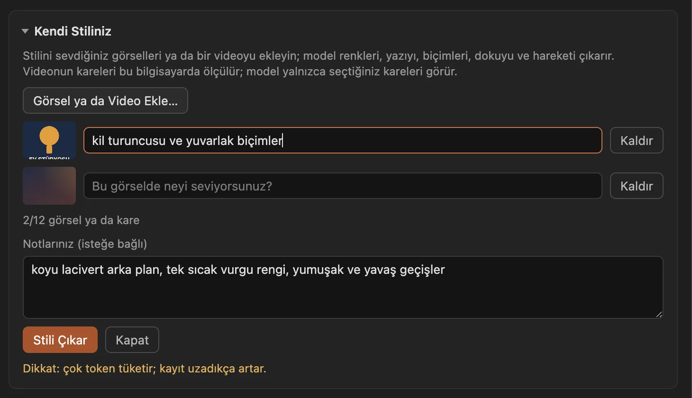

Animasyon stilleri ve kendi stilin
Her animasyon bir stille yapılır: renkleri, yazısı, biçimleri ve hareketi. Kilnframe'de 137 stil var, 37'si 3D, her biri kendi sesleriyle. Kendi stilini de yapabilirsin.

Stil bul
Animasyonlar sekmesinde, Animasyon stilleri altında:
- Stil ara (ad ya da açıklama).
- Filtreler: tür (3D, İllüstrasyon, Düz, Editoryal, Retro, Teknoloji, El yapımı, Sinematik, Minimal, Eğlenceli), ruh hali (Sakin, Enerjik, Ciddi, Neşeli, Lüks, Sıcak, Fütüristik), renk (Koyu, Açık, Renkli, Tek renk, Pastel, Neon) ve uygun olduğu iş (Anlatım, Veri, Hikaye, Ürün, Eğitim, Haber). Filtreleri temizle hepsini yeniden gösterir.
- 137 / 137 stil gibi sayı, kaçının uyduğunu söyler.
Birini seç, bir sonraki animasyonun stili olsun. 3D stillerin çizimi düz stillerden çok daha uzun sürer.
Kendi stilin
- BaşlaStillerim altında Stil Ekle'ye bas.
- Sevdiklerini ekleGörsel ya da Video Ekle… Her biri için Bu görselde neyi seviyorsunuz?, bütünü için Notlarınız (isteğe bağlı) yaz; örneğin “koyu arka plan, tek vurgu rengi, yumuşak ve yavaş geçişler”.
- Videoysa karelerini seçVideonun kareleri bu bilgisayarda ölçülür; Kareleri Seç bazılarını dışarıda bırakmanı sağlar. Model yalnızca tuttuğun kareleri görür.
- YapStili Çıkar'a bas; en çok 12 görsel ya da kare girer. Yapay zeka modelin renkleri, yazıyı, biçimleri, dokuyu ve hareketi onlardan alır.

Sonradan Düzenle notlarını değiştirir: Notları Kaydet onları modele sormadan hemen saklar; Yeniden Üret stili yeniden yapar. Stili Sil onu Çöp Kutusu'na taşır; onunla yapılmış animasyonlar olduğu gibi kalır.
Bir marka kiti yeni projeler için varsayılan bir stil taşıyabilir (Marka kitleri ve yazı tipleri).